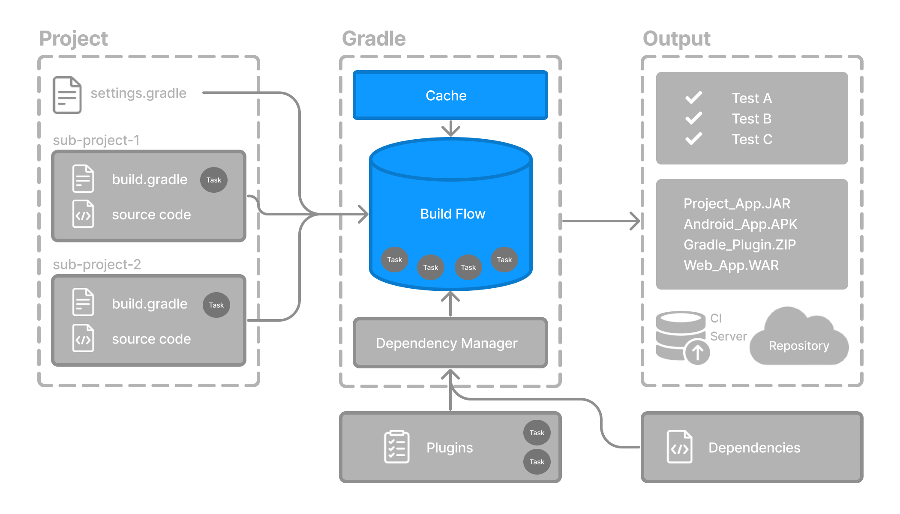

Gradle 主要通过两项功能缩短构建时间：增量构建和构建缓存。

任务结果标签
开启详细模式运行 Gradle 构建时，每个任务都会打印一个简短的结果标签，说明执行时发生了什么。这些标签有助于理解 Gradle 的行为，以及增量构建和构建缓存等性能优化：
> Task :compileJava UP-TO-DATE
> Task :processResources NO-SOURCE
> Task :jar FROM-CACHE
> Task :test SKIPPED
> Task :publish| 任务标签 | 含义 |
|---|---|
| 任务的输入和输出自上次运行以来没有变化，因此跳过了该任务。 |
| 跳过了任务执行，并从本地或远程构建缓存中恢复了它的输出。 |
| 任务没有需要处理的源文件（例如没有需要编译的 Java 文件），因此被跳过。 |
| 由于某个条件（例如 only-if 规则或命令行标志），任务没有执行。 |
任务正常运行并生成了输出。 | |
| 任务运行了，但遇到了错误。 |
增量构建
增量构建会避免运行那些自上次构建以来输入没有变化的任务。如果重新执行这些任务只会生成相同的输出，就没有必要再执行。
要让增量构建生效，任务必须定义自己的输入和输出。构建时，Gradle 会判断这些输入或输出是否发生了变化。如果有变化，Gradle 就执行任务；否则会跳过执行。
增量构建始终处于启用状态。要观察它的实际效果，最好的方式是开启详细模式。在详细模式下，构建会标出每个任务的状态：
$ ./gradlew compileJava --console=verbose> Task :buildSrc:generateExternalPluginSpecBuilders UP-TO-DATE
> Task :buildSrc:extractPrecompiledScriptPluginPlugins UP-TO-DATE
> Task :buildSrc:compilePluginsBlocks UP-TO-DATE
> Task :buildSrc:generatePrecompiledScriptPluginAccessors UP-TO-DATE
> Task :buildSrc:generateScriptPluginAdapters UP-TO-DATE
> Task :buildSrc:compileKotlin UP-TO-DATE
> Task :buildSrc:compileJava NO-SOURCE
> Task :buildSrc:compileGroovy NO-SOURCE
> Task :buildSrc:pluginDescriptors UP-TO-DATE
> Task :buildSrc:processResources UP-TO-DATE
> Task :buildSrc:classes UP-TO-DATE
> Task :buildSrc:jar UP-TO-DATE
> Task :list:compileJava UP-TO-DATE
> Task :utilities:compileJava UP-TO-DATE
> Task :app:compileJava UP-TO-DATE
BUILD SUCCESSFUL in 374ms
12 actionable tasks: 12 up-to-date运行一个先前已执行过且没有变化的任务时，任务旁边就会显示 UP-TO-DATE。
要持续启用详细模式，请在 gradle.properties 文件中添加 org.gradle.console=verbose。 |
构建缓存
增量构建是一项很有用的优化，可以避免重复完成已经做过的工作。如果开发者一直只修改某一个文件，通常就没有必要重新构建项目中的所有其他文件。
但是，如果这位开发者切换到上周创建的一个新分支，会发生什么？这些文件会重新构建，即使开发者正在构建的内容以前已经构建过。
这时，构建缓存就能派上用场。
构建缓存保存先前的构建结果，并在需要时恢复它们。这样可以避免重复执行耗时、成本高的过程，减少重复工作及其开销。
利用构建缓存重新填充本地目录后，任务会被标记为 FROM-CACHE：
$ ./gradlew compileJava --build-cache> Task :buildSrc:generateExternalPluginSpecBuilders UP-TO-DATE
> Task :buildSrc:extractPrecompiledScriptPluginPlugins UP-TO-DATE
> Task :buildSrc:compilePluginsBlocks UP-TO-DATE
> Task :buildSrc:generatePrecompiledScriptPluginAccessors UP-TO-DATE
> Task :buildSrc:generateScriptPluginAdapters UP-TO-DATE
> Task :buildSrc:compileKotlin UP-TO-DATE
> Task :buildSrc:compileJava NO-SOURCE
> Task :buildSrc:compileGroovy NO-SOURCE
> Task :buildSrc:pluginDescriptors UP-TO-DATE
> Task :buildSrc:processResources UP-TO-DATE
> Task :buildSrc:classes UP-TO-DATE
> Task :buildSrc:jar UP-TO-DATE
> Task :list:compileJava FROM-CACHE
> Task :utilities:compileJava FROM-CACHE
> Task :app:compileJava FROM-CACHE
BUILD SUCCESSFUL in 364ms
12 actionable tasks: 3 from cache, 9 up-to-date本地目录重新填充完成后，下次执行时任务会标记为 UP-TO-DATE，而不是 FROM-CACHE。
构建缓存让团队之间能够共享和复用没有变化的构建及测试输出。这样可以加快本地和 CI 构建，因为不必浪费处理时间，重新构建那些未受新代码变化影响的二进制文件。
下一步：了解插件 >>